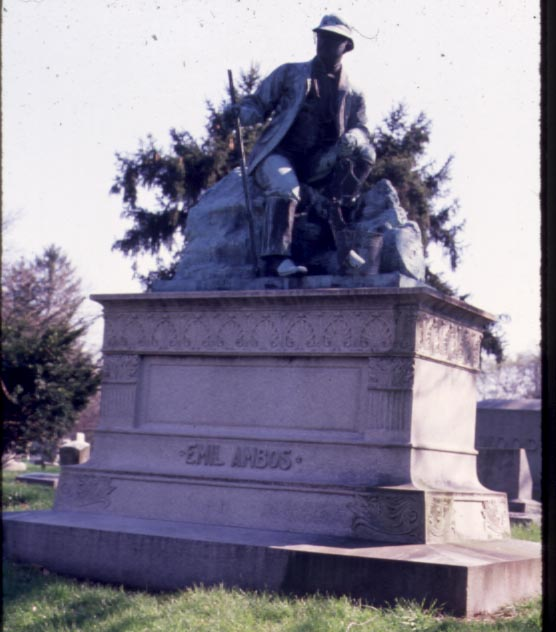
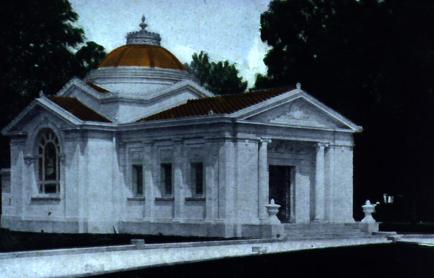
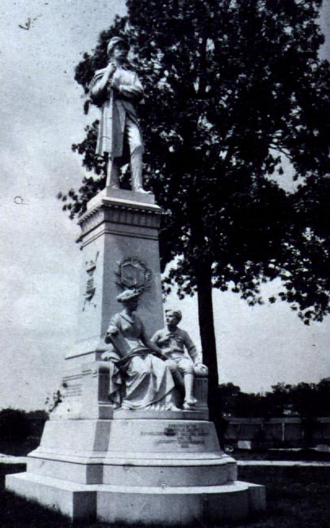
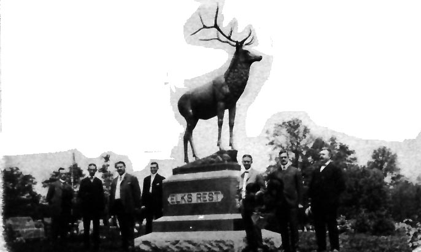
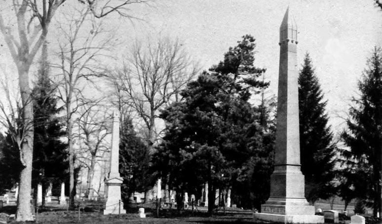
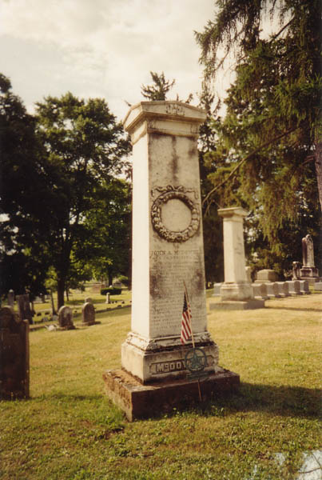
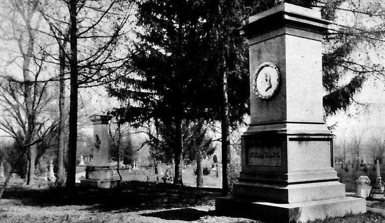

Travelling the vast expanses of Greenlawn Cemetery will take you past some unique and fascinating grave markers. And since the whole area is as big as a large town, return visits will undoubtedly show you new things. Above is an old photo of one of Greenlawn's most famous gravestones: that of Emil Ambos, restauranteur and (I assume) avid fisherman. Emil liked fishing so much that they had a statue of him doing just that placed atop his tomb.


The Cemetery Chapel; Soldiers' and Sailors' Monument, 1897


Elks Monument, 1901; Hayden Obelisk, 1888
Nowadays Greenlawn is kept up by a small army of groundskeepers. On any given day you'll pass them in their trucks and walking around with weedwhackers, mowing the grass in rotating sections and clearing fallen tree branches. These people really have their shit together; in spite of the cemetery's size, it always looks good. You rarely run into any shaggy grass or debris. It's also interesting to note that Greenlawn is a protected bird sanctuary; quite often you see birdwatchers hanging around with binoculars, hoping to see a speckle-tailed cardinal or something.

Certain sections are themed, such as Baby Land, Lullabye Land, and Baby Rest, where infants are buried. Many of their graves are marked only by a stone lamb or sleeping angel, since miscarried babies and stillborns are often not named. Separate sections for military graves are arranged by war: Civil War, Spanish-American, WWI, WWII, Korea, Vietnam. Their graves are identical, lined up in rows.


Above are a couple of gravestones from the oldest section of the cemetery, which is located close to the Brown Road border. On the right is Lucas Sullivant. On the left is a really cool gravestone for John A. McDowell, who, the stone tells us, was "born in Kentucky" and became a judge and legislator. His life story is carved into the gravestone.

Of course, any graveyard of this size and significance has to have a few ghosts. After my daylight trips I decided I had to get into Greenlawn after dark to do some ghost hunting. To explore the creepier side of Greenlawn Cemetery, click below.

Back